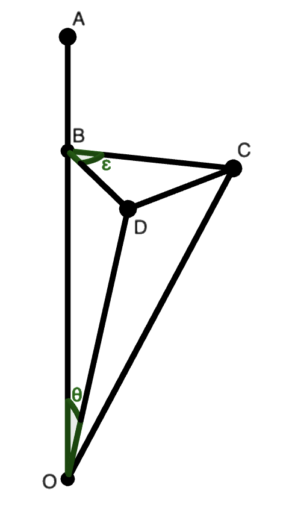
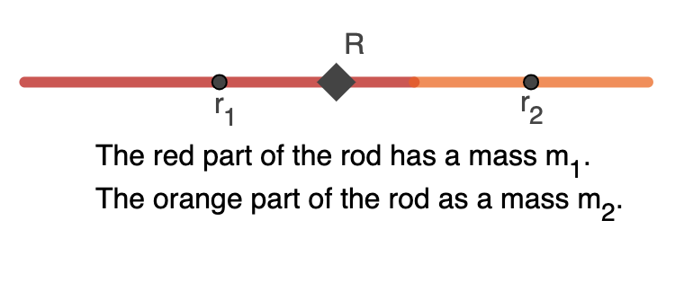

Notes on Landau and Lifshitz: Conservation Laws
April 2023
In this second installment (here's the
first installment), we'll go over the
second chapter of the first volume of Landau and Lifshitz—conservation
laws. As anyone with a knowledge of physics knows, these are very
important laws, despite having deceptively simple proofs. So much so
that I practically stumbled upon the proof of conservation of
momentum by accident. The key idea of this chapter seems to be that to
each invariance—i.e., homogeneity, isotropy, etc.—there corresponds a
law of conservation. This makes sense on an intuitive level. For
instance, the homogeneity of time is mathematically stated as
$\partial L/\partial t = 0$. It's understandable if we use this fact
in a long of chain of derivatives to deduce that $\d C/\d t = 0$ wherein
$C$ would be a conserved quantity.
- Energy
- Momentum
- Angular momentum
- Center of mass and reference frames
- Mechanical similarity
- The virial theorem
- Addendum: Noether's theorem
Energy
Lets take our example to completion. Suppose we have a system of $N$ particles whose motion is determined by the Lagrangian $L$ of $q_1,\dots,q_N$ and $\dot{q}_1,\dots,\dot{q}_N$ as well as $t.$ As mentioned before, a reasonable thing we might do is to differentiate $L$ with respect to $t$, knowing that $\partial L/\partial t = 0.$ As such $$ \frac{\d L}{\d t} = \sum_{i=1}^N \left( \frac{\partial L}{\partial q_i}\dot{q}_i + \frac{\partial L}{\partial \dot{q}_i}\ddot{q}_i \right) + \frac{\partial L}{\partial t}. $$ By using the Euler-Lagrange equation $\partial L/\partial q = \frac{\d}{\d t}(\partial L/\partial \dot{q})$ we can rewrite our term for $\d L/\d t$ to get $$ \frac{\d L}{\d t} = \sum_{i=1}^N \left( \frac{\d}{\d t}\frac{\partial L}{\partial \dot{q}_i}\dot{q}_i + \frac{\partial L}{\partial \dot{q}_i}\ddot{q}_i \right) = \sum_{i=1}^N \frac{\d}{\d t}\left(\frac{\partial L}{\partial \dot{q}_i}\dot{q}_i\right) $$ which can be seen from the product rule. Since differentiation is a linear operation, we can pull it outside of the sum, then move everything to one side whence we have $$ \frac{\d}{\d t}\left(\sum_{i=1}^N\frac{\partial L}{\partial \dot{q}_i}\dot{q}_i - L\right) = 0.$$ As such, $\sum_{i=1}^N\frac{\partial L}{\partial \dot{q}_i}\dot{q}_i - L$ is a conserved quantity. But what sort of quantity is it? What would be a reasonable name for it?
We can answer this question by looking at the Cartesian form of this quantity. Since $L = \frac{1}{2}\sum mv^2 - U$, then $$\begin{aligned} \sum_{i=1}^N\frac{\partial L}{\partial \vec{v}_i}\vec{v}_i - L &= \sum_{i=1}^N mv_i^2 - \frac{1}{2}\sum_{i=1}^N mv_i^2 + U \\ &= \frac{1}{2}\sum_{i=1}^N mv_i^2 + U. \end{aligned}$$ So it seems that the sum of the kinetic and potential energies is a conserved quantity. So it makes sense to call it energy. We have now established the principle of conservation of energy.
Lanlifshitz uses the theory of homogeneous functions to find the nature of this quantity. A function $f(x_1,\dots,x_n)$ is called homogeneous if, for all $s$, $f(ax_1,\dots,ax_n) = a^kf(x_1,\dots,x_n)$ for some number $k$ which is called the degree of the function. We may obtain a very important result by differentiating both sides of this definition with respect to $a$. $$ \sum_{i=1}^n \frac{\partial f}{\partial ax_i}x_i = ka^{k-1}f(x_1,\dots,x_n) $$ If we let $a$ approach unity, then it becomes clear that $$ \sum_{i=1}^n \frac{\partial f}{\partial x_i}x_i = kf(x_1,\dots,x_n) .$$ Which is called Euler's theorem on homogeneous functions; our second result named after him in less than fifteen pages.
An important class of homogeneous functions are homogeneous polynomials. An example that might lead us to the general definition of the homogeneous polynomial is the binomial distribution $p(x,y) = (x+y)^n$. We can see that this is a homogeneous function since $p(ax,ay) = (ax + ay)^n = a^n(x+y)^n.$ This, however, isn't particularly revealing. Most polynomials look like sums, and the sum that determines $p$ is given by $\sum_{i=0}^n \binom{n}{i}x^ny^{n-i}.$ This makes things much clearer. We can see that $p$ is homogeneous because $(ax^n)(ay)^{n-i} = a^na^{n-i}x^ny^{n-i} = a^nx^ny^{n-i}$ which allows us to factor out $a^n$. So whenever all terms of a polynomial have degree $n$, like in the binomial distribution, then we can always factor out an $a^n$ in every term. As such, we can see that any polynomial whose every term has the same degree is a homogeneous polynomial.
If you remember the previous post, we derived kinetic energy in generalized terms. It looked something like this: $$ T(\dot{q}_1,\dots,\dot{q}_N) = \frac{1}{2}\sum_{j,k=1}^N a_{j,k}\dot{q}_j\dot{q}_k $$ Notice that every term of this polynomial has a degree of two; so it is a homogeneous polynomial of degree two. Furthermore, since $\partial L/\partial \dot{q}_i = \partial T/\partial \dot{q}_i$, then by Euler's theorem on homogeneous functions we may state that $$ \sum_{i=1}^N\frac{\partial L}{\partial \dot{q}_i}\dot{q}_i = \sum_{i=1}^N\frac{\partial T}{\partial \dot{q}_i}\dot{q}_i = 2T(\dot{q}_i, \dots,\dot{q}_N) $$ Rewriting the expression for our conserved quantity by using this fact results in $$ \sum_{i=1}^N\frac{\partial L}{\partial \dot{q}_i}\dot{q}_i - L = 2T - T + U = T + U $$ So as you can see, we have shown in generalized coordinates that the conserved quantity associated with the homogeneity of time is energy.
We may now move on to the conservation law associated with the homogeneity of space.
Momentum
The homogeneity of space in a system of $N$ particles is stated mathematically as $L(q_1+\varepsilon,\dots,q_N+\varepsilon, \dot{q}_1,\dots,\dot{q}_N) = L$ for all $\varepsilon.$ Expanding the left side of this equality in terms of $\varepsilon$ results in $$ L(q_1+\varepsilon,\dots,q_N+\varepsilon, \dot{q}_1,\dots,\dot{q}_N) = L + \varepsilon\sum_{i=1}^N\frac{\partial L}{\partial q} $$ where $\varepsilon$ is an infinitesimal. Therefore, we can say that $\sum_{i=1}^N(\partial L/\partial q) = 0.$ We can rewrite this fact with the Euler-Lagrange equation to introduce the much needed time derivative into the game. So as you can guess $\sum_{i=1}^N\frac{\d}{\d t}(\partial L/\partial \dot{q}_i) = 0.$ If we pull the derivative outside of the sum, it becomes clear that $\sum(\partial L/\partial \dot{q})$ is a conserved quantity.
As before, it seems reasonable to investigate the nature of this quantity and to give it a good name. As always, the Cartesian coordinate system is the guide of our intuition. So lets find the form of this new quantity in Cartesian terms: $\sum(\partial L/\partial \vec{v}) = \sum m\vec{v}.$ In Newtonian mechanics we called this the momentum of the system, and we'll continue calling it that. From this we'll call $\vec{p}_i = \partial L/\partial \dot{q}_i$ the generalized momentum of the $i$th particle.
One of the core properties of momentum is that its time derivative is the force. If you recall the first installment of these notes, we showed that $\vec{F}_i = \partial L/\partial q_i$ is the generalized force on the $i$th particle. The Euler-Lagrange equation may be restated in these terms as $\vec{F} = \dot{\vec{p}}.$ This isn't very interesting; we showed it way back in the first installment. What is interesting is that, if momentum is conserved, then $\frac{\d }{\d t}\sum \vec{p} = \sum \vec{F} = 0$. The fact that the sum of the forces is always zero is called Newton's third law. We have finally proved all of them. Yay!
To be clear, Newton's second law actually states that for every force $\vec{F}_1$ there exists a force $\vec{F}_2$ equal in magnitude and opposite in direction. In other words, $\vec{F}_1 + \vec{F}_2 = 0.$ This follows from $\sum \vec{F} = 0$. If Newton's third law is false, then there is at least one force $\vec{F}_1$ such that there is no reaction to it that cancels it out. Therefore $\sum \vec{F}$ cannot be zero. Which is the contrapositive form of what we intended to show.
Problem. Which law of nature is broken in a non-inertial reference frame?
See answer
A non-inertial frame of reference $K'$ is moving with a non-zero acceleration relative to another frame $K$. If this is so, then objects that are stationary in $K$ are accelerating in $K'$, which means that they have forces which come out of no where and are not canceled out by any other force. Contradicting Newton's third law.
Another possible answer is that conservation of momentum is violated. The momentum of certain particles is increasing without any force being impressed on them.
Next on the list is the conservation law associated with the isotropy of space.
Angular momentum
Previously, the invariances with which we had to deal with were on the simpler side. For instance, a parallel translation in space is equivalent to adding a constant to every single coordinates; and a time translation is equivalent to adding a constant to the time. But the isotropy of space—invariance under rotation—is going to be a little bit harder to describe.
 Suppose that the entire system of $n$ particles is rotated infinitesimally by $\varepsilon$ degrees with respect to some axis of rotation $OA.$ One of these $n$ particles is located at $D$ and ends up at $C$ after the rotation. As rotation is distance preserving, then $BD = CD.$ Furthermore, $\varepsilon$ is infinitesimally small, so $CD \perp BD.$ Based on this information, we can see that the change in the particle's position after the rotation is $DC = BD\sin\varepsilon$. This in turn is equal to $BD\varepsilon$ since $\sin\varepsilon = \varepsilon$ as $\varepsilon \to 0.$
We can see that $BD = OD\sin\theta.$ Since $OD$ is just the position of the particle before the rotation, we'll denote it as $\vec{r}$. As such, the change in the particle's position during the rotation has a magnitude of $\delta r = DC = r\varepsilon\sin\theta$ and is perpendicular to $BD$.
If we let $\delta \vec{\phi}$ be a vector whose magnitude is $\varepsilon$ and whose direction is the same as $OA,$ then we can see that the change in the particle's position is really $\delta \vec{r} = \delta \vec{\phi} \times \vec{r}.$ Similarly, the change in the velocity is also $\delta \vec{v} = \delta \vec{\phi} \times \vec{v}$ which can be found by the same reasoning. Furthermore, notice that $\d\delta\vec{r}/\d t = \vec{r}\times(\d\delta\vec{\phi}/\d t) + \delta\vec{v} = \delta\vec{v}$ since $\delta\vec{\phi}$ is constant.
In short, the change in the $i$th particle's position and velocity can be given by $\delta \vec{r}_i = \delta \vec{\phi}\times\vec{r}_i$ and $\delta \vec{v} = \delta \vec{\phi} \times \vec{v}_i$ respectively. As such, we can state the isotropy of space mathematically: $$L(\vec{r}_1 + \delta \vec{r}_1,\dots,\vec{r}_n + \delta\vec{r}_n, \vec{v}_1 + \delta \vec{v}_1,\dots,\vec{v}_n + \delta\vec{v}_n) = L.$$ As usual, we will expand the Taylor series of the left side with respect to $\delta \vec{r}.$ The process of getting the Taylor series is identical to what we did during the derivation of the Euler-Lagrange equation in the first installment so I won't go over it in full detail. It suffices to say that $$\begin{aligned} \delta L &= \sum_{i=1}^n\left(\frac{\partial L}{\partial \vec{r}_i}\delta\vec{r}_i + \frac{\partial L}{\partial \vec{v}_i}\delta\vec{v}_i\right) = 0 \\ &= \sum_{i=1}^n\left(\frac{\partial L}{\partial \vec{r}_i}(\delta\vec{\phi}\times\vec{r}_i) + \frac{\partial L}{\partial \vec{v}_i}(\delta\vec{\phi}\times\vec{v}_i)\right) \end{aligned}$$ Since the cross product and the dot product are related through $a(b\times c) = b(c\times a),$ we can factor out $\delta \vec{\phi}.$ $$ \delta L = \delta\vec{\phi} \sum_{i=1}^n\left(\vec{r}_i\times\frac{\partial L}{\partial \vec{r}_i} + \vec{v}_i\times\frac{\partial L}{\partial \vec{v}_i}\right) = 0. $$ We can rewrite this expression by using the Euler-Lagrange equation and the fact that $\delta\vec{\phi}$ is some arbitrarily small positive quantity. $$\begin{aligned} \sum_{i=1}^n\left(\vec{r}_i\times\frac{\partial L}{\partial \vec{r}_i} + \vec{v}_i\times\frac{\partial L}{\partial \vec{v}_i} \right) &= \sum_{i=1}^n\left(\vec{r}_i\times\frac{\d}{\d t}\frac{\partial L}{\partial \vec{v}_i} + \vec{v}_i\times\frac{\partial L}{\partial \vec{v}_i} \right) \\ &= \sum_{i=1}^n\frac{\d}{\d t}\left(\vec{r}_i\times\frac{\partial L}{\partial \vec{v}_i}\right) \\ &= 0. \end{aligned}$$ Pulling the derivative outside of the sum tells us that $\sum[\vec{r}\times(\partial L/\partial \vec{v})]$ is a conserved quantity.
As we discussed in the previous section, $\partial L/\partial \vec{v} = \vec{p}$ is generalized momentum. Substituting this in our new quantity tells us that $\sum\vec{r}\times\vec{p}$ is conserved.
Previously, we would try to find the nature of this quantity. Once we had done so, we'd give it a decent name. In this case, however, we already know the nature of this quantity since we did the derivation in Cartesian coordinates. And since it has momentum in it, we'll call it angular momentum.
Center of mass and reference frames
We have previously established that the laws of nature hold in all inertial frames of reference. We also discussed how we can see the motions of particles from different frames of reference via the Galilean transformation. An interesting problem in this Galilean relativity is to find the transformations that tell us how to convert the conserved quantities of a certain frame onto another.
For instance, suppose that we have a system of $n$ particles with positions $\vec{r}_i$ moving with velocities $\vec{v}_i$ with masses $m_i$ from the perspective of some inertial frame. If another inertial frame is moving with a velocity $\vec{V}$ relative to this frame, then we know from the Galilean transformation that the velocities of the particles in this frame are $\vec{v}_i - \vec{V}.$ As such, the momentum of the system in this reference frame is given by $$ \sum_{i=1}^nm_i(\vec{v}_i - \vec{V}) $$ An interesting corollary of this fact is that the reference frame moving with a velocity of $\vec{V} = (\sum m_i\vec{v}_i)/(\sum m_i)$ has a total momentum of $0.$ We may further infer that the point in this frame which is moving with that velocity is placed at $\vec{R} = (\sum m_i\vec{r}_i)/(\sum m_i).$ As you can see, these are weighted averages where the weights are actually masses! The point $\vec{R}$ is called the center of mass of the system, and the inertial frame moving with a velocity $\vec{V}$ is called the center of mass frame or the CM-frame.
An interesting property of the center of mass is that we can balance the entire system on the center of mass if we rigidly connect every particle to this point. A special case of this is that the center of mass of two particles of equal mass is the midpoint of the line connecting them. This is perfectly obvious from our intuitions. What is less obvious is how this will work when the masses are different.
Suppose, for instance, that the first object has a mass $m_1$ and the second one has a mass $m_2.$ We wish to find the points $\vec{r}_1$ and $\vec{r}_2$ such that when these two are placed on a fulcrum at $\vec{R}$ they balance. Supposing that the two objects are metallic, reforge them into a straight rod with a uniform density of one. Assuming—not without reason—that this rod will balance at its midpoint, we place said point on top of the fulcrum at $\vec{R}$. Furthermore, since the rod has a uniform  density of one, then the first $m_1$ meters of it will have a mass of $m_1;$ and the last $m_2$ meters of it will have a mass of $m_2.$ Each of these two parts of the rod can also be balanced at their midpoints $\vec{r}_1$ and $\vec{r}_2$ respectively. Since the length of the whole rod is $m_1 + m_2,$ then the distance between the first midpoint and the fulcrum is $\vec{R} - \vec{r}_1 = (m_1 + m_2)/2 - m_1/2 = m_2/2.$ Similarly, the distance between the second midpoint and the fulcrum is $\vec{r}_2 - \vec{R} = m_1/2.$ Therefore, $(\vec{R} - \vec{r}_1)/(\vec{r}_2 - \vec{R}) = m_2/m_2.$ This principle is called the law of the lever.
We can state this law another way: $m_1(\vec{R} - \vec{r}_1) + m_2(\vec{R} - \vec{r}_2) = 0.$ Does this look familiar? In case it doesn't, we can solve the equation for $\vec{R}$ to see that $\vec{R} = (m_1\vec{r}_1 + m_2\vec{r}_2)/(m_1+m_2).$ This should definitely look like the special case of the formula we got before, where $n = 2$ is the number of particles. If we treat this as a base case, we can inductively prove the general case for arbitrary $n.$
Suppose that the center of mass of $n$ particles placed at $\vec{r}_i$ is given by $\vec{R}_1 = (\sum m\vec{r})/(\sum m).$ If we add another particle to this system, placed at $r_{n+1}$ with a mass of $m_{n+1},$ then what is the center of mass? Since we can balance the first $n$ particles at $\vec{R}_1,$ then we can treat them as a single point-mass placed at $\vec{R}_1$ with a mass of $\mu = \sum_{i=1}^n m_i.$ By the law of the lever, the center of mass of the masses at $\vec{R}_1$ and $\vec{r}_{n+1}$ is $$ \vec{R} = \frac{\mu\vec{R}_1 + m_{n+1}\vec{r}_{n+1}}{\mu + m_{n+1}} = \frac{\sum_{i=1}^{n+1} m_i\vec{r}_i}{\sum_{i=1}^{n+1}m_i}. $$ Which is what we wanted to show. As such, the entire system can be balanced on the point whose inertial frame has a momentum of zero.

This makes $\vec{R}$ somewhat representative of the entire system as a whole. The entire system can be balanced upon it, and its perspective is the one that views the system as being at rest. As such, whenever we wish to view the motion of the system through a single point, we will use the center of mass and its associated reference frame. This principle stated more precisely would become Euler's first law of rigid body motion.
Well that was an interesting distraction. Lets get back to work. Since the momentum of the CM-frame is zero, then the energy of the CM-frame has to be somewhat interesting. We'll call it the internal energy and denote it with $E_i$ from now on.
Armed with this new terminology, we can find the transformation law for energy. Suppose that an inertial frame $K$ is moving with a velocity $\vec{V}$ relative to another frame $K'.$ The Galilean transformation states that $\vec{v}_i' = \vec{v}_i - \vec{V}$ where $\vec{V}$ is the speed of some inertial frame. As such, the kinetic energy of this new frame $E'$ is $$\begin{aligned} E' &= \frac{1}{2}\sum_{i=1}^n m_i(\vec{v}_i - \vec{V})^2 + U \\ &= E + \frac{1}{2}\sum_{i=1}^nm_i\vec{V}^2 - \vec{V}\sum_{i=1}^nm_i\vec{v}_i \\ &= E + \frac{1}{2}\mu\vec{V}^2 - \vec{V}\vec{P} \end{aligned}$$ where $E, P$ are the kinetic energy and the momentum respectively of the system in the frame of observation. If the frame of observation happens to be the CM-frame and $\mu = \sum_{i=1}^nm_i$, then $E' = E_i + \frac{1}{2}\mu\vec{V}^2$ since $\vec{P} = 0.$
We can find the transformation law for angular momentum as well. In $K$ the angular momentum is $$ \vec{M} = \sum_{i=1}^n \vec{r}_i \times m_i\vec{v}_i = \sum_{i=1}^nm_i\vec{r}_i\times\vec{v}_i. $$ By using the Galilean transformation, we can get the angular momentum from the perspective of $K'.$ $$\begin{aligned} \vec{M}' &= \sum_{i=1}^nm_i\vec{r}_i\times(\vec{v}_i - \vec{V}) \\ &= \sum_{i=1}^nm_i\vec{r}\times\vec{v}_i - \sum_{i=1}^nm_i\vec{r}\times\vec{V} \\ &= \vec{M} - \mu\vec{R}\times\vec{V}. \end{aligned}$$ If $K$ happens to be the CM-frames, then we have found an interesting fact about angular momentum: the different between the $\vec{M}$ and $\vec{M}'$ is always a function of the motion of the system as a whole—i.e., of the center of mass. If were to write $\vec{M} - \mu\vec{R}\times\vec{V}$ as $\vec{M} - \vec{R}\times\vec{P},$ then we may even say that the difference between the angular momentum of the two frames is the angular momentum of the center of mass $\vec{R}\times\vec{P}$ if and only if one of them is the CM-frame.
Mechanical similarity
In geometry, the concept of similarity is used to work with shapes which are scaled versions of each other. So if two shapes $q$ and $q'$ are similar, then the ratio of the distances between two points $r_1,r_2$ on $q$ and the distances between the two associated points $r_1',r_2'$ on $q'$ has to be constant. In mathematical notation this becomes, $q'/q=|r_1' - r_2'|/|r_1 - r_2| = \alpha$ for all $r_1,r_2$ on $q.$
The analogous concept in mechanics is unsurprisingly called mechanical similarity. The key difference between these two concepts is that geometrical systems deal with space only, while mechanical ones have to deal with time as well. So if the paths of two particles $q'$ and $q'=\alpha q$ are similar, then the travel time of the two particles also has to be similar: $t' = \beta t$ for some $\beta.$ Its intuitively obvious that this won't work for all pairs of $\alpha$ and $\beta.$ So there must be some condition with $\alpha$ and $\beta$ which allows us to deduce the similarity of the two systems.
One way to find this condition is by experimenting. For instance, we know that projectiles move in a parabola, so we can throw a ball at various initial velocities, measure the maximum height and the travel time, and try to find a relationship between them. But since touching grass is antithetical to the blogger philosophy, and that the title of the book we're going over is A Course of Theoretical Physics, then we won't be doing any experiments.
Notice, however, that what we have written above is a way of asking the following: if two mechanical systems $(q, \dot{q}, t)$ and $(q', \dot{q}', t')$ with geometrically similar paths are both realizable, then what is the relationship between $q'/q$ and $t'/t$?
Suppose that $q' = \alpha q$ and $t' = \beta t.$ If so, then $\dot{q}' = \alpha \dot{q}/\beta$ which can be seen from the chain rule $(\d\alpha q/\d\beta t)(\d\beta t/\d t) = \d\alpha q/\d t = \alpha\dot{q}.$ Therefore, the kinetic energy of the second system would be $T' = T(\alpha\dot{q}/\beta).$ However, since $T$ is a homogeneous function of the second degree, then $T' = \alpha^2T/\beta^2.$ The potential energy is then $U' = U(\alpha q)$ and the Lagrangian is given by $L' = \alpha^2T/\beta^2 - U(\alpha q)$ under which $(q',\dot{q}',t')$ is assumed to be realizable.
As we have expressed the Lagrangian of the second system in terms of the first system, we have no choice but to compare it to the Lagrangian of the first system. Since $L'$ and $L$ are both realizable, then they are either multiples of each other, or differ by the total time derivative of a function of coordinates and time. The second case seems to be complicated and not similar, in spirit, to the term similarity which we are claiming to study. So we'll proceed on the case that $L'$ is a multiple of $L.$ Since we have used homogeneous functions so much, a possible scenario for us to consider is one where $U$ is a homogeneous function of degree $k$. If this is so, then $U' = \alpha^kU$ and $L' = \alpha^2T/\beta^2 - \alpha^kU = \gamma L$ for some $\gamma.$ This $\gamma$ is evidently a factor of both $\alpha^2/\beta^2$ and $\alpha^k,$ since it has been factored out of the left side of the equation. For this to be possible, however, we need to have $\alpha^2/\beta^2 \propto \alpha^k.$ This can be otherwise stated as $(q'/q)^{2-k} \propto (t'/t)^2$ since $\alpha = q'/q$ and $\beta = t'/t.$
We have successfully found the condition for similarity between two mechanical systems, but how can we make any useful deductions from it? Apparently, yes. Landau is a lot smarter than me so he already came up with a bunch of stuff like these:
- If the potential energy is uniform—i.e, $k=1$—then $t'/t \propto \sqrt{q'/q}.$ An example of this is an object in free fall on Earth. The position of this object at time $t$ can be gotten from $y(t) = gt^2/2.$ Two objects which take different paths $y'$ and $y$ then have the ratio in their positions of $y'/y = t'^2/t^2.$ Which is exactly what we predicted by using mechanical similarity.
- A more interesting case can be found in orbital mechanics. When a planet is orbiting the sun, the potential energy is $U = -GmM/r$ where $r$ is the distance between the planet and the sun. The degree of this function—relative to $r$—is evidently $-1,$ and as such $(r/r')^3 \propto (t/t')^2$ where $(r,t)$ is the orbit and orbital period of any planet moving in a similar orbit to our own. We may infer that there is some planet whose orbit is geometrically similar to our own, and as such $r/r'$ is equal to the ratio of the length of their semi-major axes: $s/s'.$ If the length of the semi-major axis happens to be one, then our inference becomes $s^3 = (r/r')^3 = (t/t')^2$ which may otherwise be stated as $s^3 \propto t^2.$ This result is better known as Kepler's third law of planetary motion.
- If the degree of the potential is two, as in a spring's potential energy $U = kx^2/2,$ then $(x'/x)^0 = (t'/t)^2 = 1.$ Meaning that a two springs are similar to each other if $t' = -t$ or $t' = t.$ I don't think this is very interesting but I wanted to have added something of my own here.
The virial theorem
I don't really have a motivation for why this is important. I don't even know why its important and not just some random fact. So lets stop complaining and just dive in.
Suppose that $n$ particles are moving in a bounded region of space with a homogeneous potential energy $U$ of degree $k.$ We wish to find a relationship between the average value of the kinetic and potential energies. The average value of the kinetic energy is given by $$\begin{equation} \langle T \rangle = \lim_{h\to\infty}\frac{1}{h}\int_0^h T\,\d t \end{equation}$$ But how do we find this value? Well we know that $T$ is a homogeneous function (kinetic energy always is) so we use Euler's theorem to get $$ 2T = \sum_{i=1}^n\frac{\partial T}{\partial \vec{v}_i}\vec{v}_i = \sum_{i=1}^n\vec{p}_i\cdot\vec{v}_i $$ This follows from being obvious in Cartesian coordinates and the fact that $\partial T/\partial \vec{v} = \partial L/\partial \vec{v} = \vec{p}$ is the definition of generalized momentum. With some algebraic and differential trickery (hint: product rule), it should be clear that $$ 2T = \frac{\d}{\d t}\sum_{i=1}^n\vec{p}_i\cdot\vec{r}_i - \sum_{i=1}^n\dot{\vec{p}}_i\cdot\vec{r}_i $$ Once we substitute this into (1), we should care to notice that $\sum\vec{p}\cdot\vec{r}$ is always finite in a finite region of space. As such $$ 2\langle T \rangle = \lim_{h\to\infty}\frac{-1}{h}\int_0^h \sum_{i=1}^n\dot{\vec{p}}_i\cdot\vec{r}_i\,\d t = -\left\langle \sum_{i=1}^n \vec{F}_i\cdot\vec{r}_i \right\rangle $$ This is called the virial theorem after Josephus Virial, the famous Amazonian physicist whom I just made up. Anyhow, what we wanted was a relationship between the average values of $T$ and $U,$ and this is not it. Worry not dear reader, since Euler's theorem says that $$ -\sum_{i=1}^n \vec{F}_i\cdot\vec{r}_i = \sum_{i=1}^n \frac{\partial U}{\partial \vec{r}_i}\cdot\vec{r}_i = kU $$ So we have found the connection between the average values of the kinetic and potential energy: $2\langle T\rangle = k\langle U\rangle.$
Addendum: Noether's theorem
Problem. Find the quantity which is conserved if $q_i \to q_i + \varepsilon Q_i(q_1,\dots,q_n)$ is a symmetry—i.e., if the Lagrangian is not affected by this transformation.